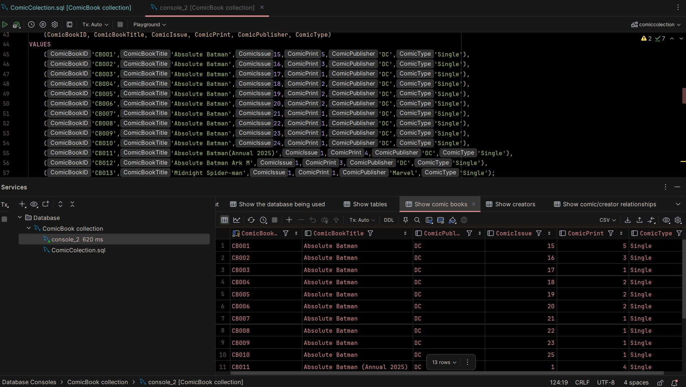

Featured Projects
Three projects demonstrating my technical ability, problem-solving process and results.

Personal Comic Book Database
Technologies: HTML, CSS, TypeScript, SQL, Fast API, Docker, Node.js, React.JS, JetBrains IDES
Situation: The Problems that I have had with this project is
Task: I am responsible for the back,front and database portions of the site.
Action: The specific steps I took to create the database was first planning which tables I need and or want Then drawing the different tables and what entities they may hold.
Result: The Result was so far a small and partial database of the Absolute Batman comics and some Marvel Midnight comics that I currently have and being able to see them in a table.
Reflection: Some of the skills I learned from the start of this project was learning how to use Docker as well as having a better understanding of how SQL and DataGrip works.
GitHub Repository →
Slidr
Technologies: Front-end: HTML, CSS, JavaScript Back-end: TypeScript, Node.js, Fast API Database: MySQL, SQL AI: Python, OpenAI API
Situation: REPLACE
Task: My task in this was to create the backend of the project using TypeScript as well as Node.js. I was also the one behind integrating openAI api into the project using Python.
Action: The specific steps I took to develop this project was researching how both TypeScript and machine learning to fully understand, how I could have work as best as we can for this project.
Result: The result will be having a working database that is able to connect to the front-end for users to find products that are safe for the children in their care.
Reflection: Through this project I learned how to code in TypeScript and create a better understanding of Node.js and machine learning.
GitHub Repository →
Fundamentals of C#
Technologies: C#
Situation: REPLACE
Task: REPLACE
Action: REPLACE
Result: REPLACE
Reflection: REPLACE: Explain the artifact and skills demonstrated.
GitHub Repository →